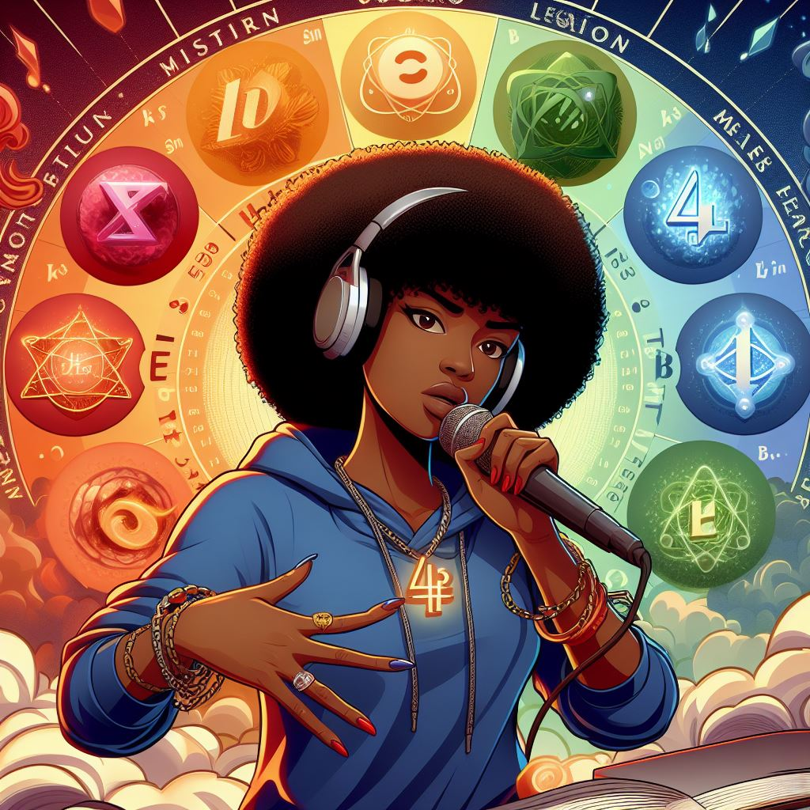

Graffiti, de levendige en expressieve kunstvorm die onze stedelijke
landschappen siert, is zoveel meer dan alleen verf op muren. Het is
een kunstvorm die grenzen verlegt, conventies uitdaagt en de
verbeelding prikkelt. Graffiti kunstenaars gebruiken kleur en vorm
om hun boodschappen en de geest van hiphop te verspreiden, waardoor
straten in levendige kunstgalerijen veranderen.
DJ'ing
Bron: Bing Ai
DJ'ing is een kunst van improvisatie en creativiteit. Het vermogen
om onverwachte overgangen te maken, de menigte te lezen en de
perfecte track te kiezen op het juiste moment is wat DJ's
onderscheidt. Bij World of Hip-hop delen we de passie voor DJ'ing en
bieden we de tools en training om je eigen mixmeester te worden. Of
je nu een aspirant-DJ bent of je vaardigheden wilt verfijnen, onze
cursussen en workshops helpen je de wereld van DJ'ing te verkennen
en je creatieve horizon te verbreden.
MC'ing/Rapping

Bron: Bing Ai
MC'ing gaat verder dan alleen woorden op een beat zetten; het is het
vangen van emoties, ervaringen en perspectieven in krachtige verzen.
MC's vertellen verhalen, delen meningen en brengen boodschappen over
met een unieke stijl en flow.
Hip-hop awareness
Bron: Bing Ai
Het "vijfde element" vertegenwoordigt het belang van kennis,
zelfbewustzijn en educatie binnen de hiphopcultuur. Het benadrukt
het idee dat hiphop niet alleen gaat over de artistieke en
expressieve elements, maar ook over het gebruik van de cultuur als
middel om het bewustzijn te vergroten, het sociale bewustzijn te
bevorderen en belangrijke kwesties aan te pakken zoals sociale
rechtvaardigheid, ongelijkheid en empowerment van de gemeenschap.